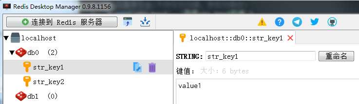
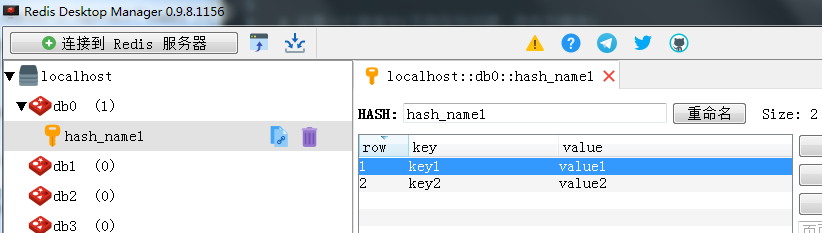
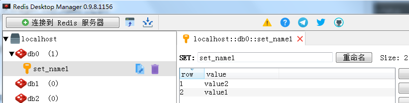
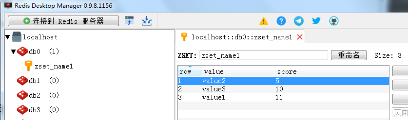

原文连接:https://www.cnblogs.com/gdjlc/p/11439434.html
Redis是一个开源的使用ANSI C语言编写、支持网络、可基于内存亦可持久化的日志型、Key-Value数据库，并提供多种语言的API。
Redis支持存储的value类型包括字符串(String), 哈希(Hash), 列表(list), 集合(set) 和 有序集合(sorted set)。
Redis官方文档：https://redis.io
Redis服务端的安装可参考：https://www.cnblogs.com/gdjlc/p/9857064.html
Redis客户端可视工具可使用：Redis Desktop Manager
一、Python安装Redis模块
pip3 install redis
二、连接Redis数据库
1、直接连接
# Reids默认有db0至db15共16个数据库，db=0表示选择db0
# decode_responses=True表示将返回结果decode，即将bytes类型改为默认utf-8，这样才能显示中文
r = redis.Redis(host='localhost',password='123456',db=0,decode_responses=True)上面连接字符串也可以写成这样
dbconfig = {'host':'localhost', 'password':'123456', 'db':0, 'decode_responses':True}
r = redis.Redis(**dbconfig)2、连接池
使用connection pool来管理对一个redis server的所有连接，预先创建多个连接，当需要进行数据库访问时，无需重新新建数据库连接，而是从连接池中取出一个空闲的数据库连接，避免每次建立、释放连接的开销，提高性能。
pool = redis.ConnectionPool(host='localhost',password='123456',db=0,decode_responses=True)
r = redis.Redis(connection_pool=pool)三、Redis的使用
1、字符串(String)
一个name对应一个字符串值来存储。如下图所示

部分方法的源码说明：
# 设置单个值(不存在则创建，存在则修改)，可以设置过期时间，可以设置name是否存在时才设置value
def set(self, name, value, ex=None, px=None, nx=False, xx=False):
"""
Set the value at key ``name`` to ``value``
``ex`` sets an expire flag on key ``name`` for ``ex`` seconds.
``px`` sets an expire flag on key ``name`` for ``px`` milliseconds.
``nx`` if set to True, set the value at key ``name`` to ``value`` only
if it does not exist.
``xx`` if set to True, set the value at key ``name`` to ``value`` only
if it already exists.
"""
# 批量设置值(同样不存在则创建，存在则修改)
def mset(self, mapping):
"""
Sets key/values based on a mapping. Mapping is a dictionary of
key/value pairs. Both keys and values should be strings or types that
can be cast to a string via str().
"""
# 获取值，key不存在返回None
def get(self, name):
"""
Return the value at key ``name``, or None if the key doesn't exist
"""
# 批量获取值
def mget(self, keys, *args):
"""
Returns a list of values ordered identically to ``keys``
"""使用实例：
import redis
r = redis.Redis(host='localhost',password='123456',db=0,decode_responses=True)
# 设置单个值(不存在则创建，存在则修改)
r.set('str_key1', '我是str_key1的值')
# 获取值、值的字节长度(1个汉字占3个字节)
print('str_key1值：{}，字节长度：{}'.format(r.get('str_key1'), r.strlen('str_key1')))
# 输出：我是str_key1的值，字节长度：20
# 在值后面追加内容
r.append('str_key1', '[这里追加的内容]')
print('str_key1值：{}'.format(r.get('str_key1')))
# 输出：我是str_key1的值[这里追加的内容]
# 批量设置值(同样不存在则创建，存在则修改)
r.mset({'str_key1':'value1','str_key2':'value2'})
# 批量获取
print('批量获取值：{}'.format(r.mget('str_key1','key2')))
# 输出：['value1', None]2、 哈希(Hash)
一个name对应一个字典来存储。如下图所示

部分方法的源码说明：
# 设置一个键值对(不存在则创建，存在则修改)，成功返回1否则返回0
def hset(self, name, key, value):
"""
Set ``key`` to ``value`` within hash ``name``
Returns 1 if HSET created a new field, otherwise 0
"""
# 批量设置值
def hmset(self, name, mapping):
"""
Set key to value within hash ``name`` for each corresponding
key and value from the ``mapping`` dict.
"""
# 返回一个键值对的值
def hget(self, name, key):
"Return the value of ``key`` within the hash ``name``"
# 返回所有键值对
def hgetall(self, name):
"Return a Python dict of the hash's name/value pairs"
# 返回指定hash名称的所有键
def hkeys(self, name):
"Return the list of keys within hash ``name``"
# 返回指定hash名称的键值对的个数
def hlen(self, name):
"Return the number of elements in hash ``name``"使用实例：
import redis
r = redis.Redis(host='localhost',password='123456',db=0,decode_responses=True)
# 设置一个键值对(不存在则创建，存在则修改)
r.hset('hash_name1','key1','value1')
# 批量设置值
r.hmset('hash_name1', {'key2':'value2','key3':'value3'})
# 获取一个键值对的值
print(r.hget('hash_name1','key1'),r.hget('hash_name1','key2'))
# 输出：value1，value2
# 批量获取键对应的值
print(r.hmget('hash_name1','key1','key2'))
# 输出：['value1', 'value2']
# 获取指定hash名称的所有键值对
print(r.hgetall('hash_name1'))
# 输出：{'key1': 'value1', 'key2': 'value2', 'key3': 'value3'}
# 获取指定hash名称的键值对的个数
print(r.hlen('hash_name1'))
# 输出：3
# 获取指定hash名称的所有key
print(r.hkeys('hash_name1'))
# 输出：['key1', 'key2', 'key3']
# 获取指定hash名称的所有value
print(r.hvals('hash_name1'))
# 输出：['value1', 'value2', 'value3']
# 判断指定hash名称的key是否存在
print(r.hexists('hash_name1','key1'), r.hexists('hash_name1','key4'))
# 输出：True False
# 删除指定指定hash名称的键值对，成功返回1，失败返回0
print(r.hdel('hash_name1','key3'))
# 输出： 13、列表(list)
一个name对应一个列表来存储。如下图所示：

部分方法的源码说明：
# 列表左边添加值，支持多个元素，多个元素时，后面的元素在列表最终结果中排左边
# 相反方法，列表右边添加值：rpush(self, name, *values)
def lpush(self, name, *values):
"Push ``values`` onto the head of the list ``name``"
# name存在才往列表左边添加元素，并返回列表个数。name不存在则不执行添加操作，返回0
# 相反方法，name存在才往列表右边添加元素：rpushx(self, name, value)
def lpushx(self, name, value):
"Push ``value`` onto the head of the list ``name`` if ``name`` exists"
# 对列表指定的索引位置重新赋值
def lset(self, name, index, value):
"Set ``position`` of list ``name`` to ``value``"
# 移除并返回列表的第一个元素
def lpop(self, name):
"Remove and return the first item of the list ``name``"
# 返回列表长度
def llen(self, name):
"Return the length of the list ``name``"
# 返回列表指定索引处的元素
def lindex(self, name, index):
"""
Return the item from list ``name`` at position ``index``
Negative indexes are supported and will return an item at the
end of the list
"""
# 返回指定索引(可以是负数)开始至结束位置处的列表结果
def lrange(self, name, start, end):
"""
Return a slice of the list ``name`` between
position ``start`` and ``end``
``start`` and ``end`` can be negative numbers just like
Python slicing notation
"""使用实例：
import redis
r = redis.Redis(host='localhost',password='123456',db=0,decode_responses=True)
# 列表左边添加: 有多个时，后面在列表中排前面，即下面索引0处值是value1，索引1处值是value2
r.lpush('list_name1','value2','value1')
# 列表右边添加
r.rpush('list_name1','value3')
# 获取列表长度
print(r.llen('list_name1'))
# 输出：3
# 获取元素：索引
print(r.lindex('list_name1', 1))
# 输出：value2
# 获取元素：切片方式
print(r.lrange('list_name1',0, -1), r.lrange('list_name1',1,2))
# 输出：['value1', 'value2', 'value3'] ; ['value2', 'value3']4、集合(set)
Set 是 String 类型的无序集合。集合成员是唯一的，集合中不能出现重复的数据。
如下图所示：

部分方法的源码说明：
# 给name中对应的集合添加元素，成功返回1，否则返回0（如果元素已存在返回0）
def sadd(self, name, *values):
"Add ``value(s)`` to set ``name``"
# 返回name对应集合中的元素个数
def scard(self, name):
"Return the number of elements in set ``name``"
# 返回name对应集合中的所有元素
def smembers(self, name):
"Return all members of the set ``name``"
# 检查value是否是name对应的集合内的元素
def sismember(self, name, value):
"Return a boolean indicating if ``value`` is a member of set ``name``"使用实例：
import redis
r = redis.Redis(host='localhost',password='123456',db=0,decode_responses=True)
# 集合中添加元素
print(r.sadd('set_name1', 'value1'))
#输出：1
print(r.sadd('set_name1', 'value1'))
#输出：0
print(r.sadd('set_name1', 'value1', 'value2'))
#输出：1
# 获取集合中的元素个数
print(r.scard('set_name1'))
#输出：2
# 获取集合中的所有成员
print(r.smembers('set_name1'))
#输出：{'value2', 'value1'}
# 检查value是否是name对应的集合内的元素
print(r.sismember('set_name1','value1'), r.sismember('set_name1','value3'))
#输出：True False5、有序集合(sorted set)
有序集合和集合一样也是string类型元素的集合,且不允许重复的成员。
不同的是每个元素都会关联一个double类型的分数。redis正是通过分数来为集合中的成员进行从小到大的排序。
有序集合的成员是唯一的,但分数(score)却可以重复。
如下图所示：

部分方法的源码说明：
# 给name中对应的集合添加元素
def zadd(self, name, mapping, nx=False, xx=False, ch=False, incr=False):
"""
Set any number of element-name, score pairs to the key ``name``. Pairs
are specified as a dict of element-names keys to score values.
``nx`` forces ZADD to only create new elements and not to update
scores for elements that already exist.
``xx`` forces ZADD to only update scores of elements that already
exist. New elements will not be added.
``ch`` modifies the return value to be the numbers of elements changed.
Changed elements include new elements that were added and elements
whose scores changed.
``incr`` modifies ZADD to behave like ZINCRBY. In this mode only a
single element/score pair can be specified and the score is the amount
the existing score will be incremented by. When using this mode the
return value of ZADD will be the new score of the element.
The return value of ZADD varies based on the mode specified. With no
options, ZADD returns the number of new elements added to the sorted
set.
"""
# 返回元素个数
def zcard(self, name):
"Return the number of elements in the sorted set ``name``"
# 返回指定区间分数的元素个数
def zcount(self, name, min, max):
"""
Returns the number of elements in the sorted set at key ``name`` with
a score between ``min`` and ``max``.
"""
# 返回指定区间索引的元素
def zrange(self, name, start, end, desc=False, withscores=False,
score_cast_func=float):
"""
Return a range of values from sorted set ``name`` between
``start`` and ``end`` sorted in ascending order.
``start`` and ``end`` can be negative, indicating the end of the range.
``desc`` a boolean indicating whether to sort the results descendingly
``withscores`` indicates to return the scores along with the values.
The return type is a list of (value, score) pairs
``score_cast_func`` a callable used to cast the score return value
"""
# 对指定成员的分数加上增量amount
def zincrby(self, name, amount, value):
"Increment the score of ``value`` in sorted set ``name`` by ``amount``"
# 返回成员的分数值
def zscore(self, name, value):
"Return the score of element ``value`` in sorted set ``name``"
# 获取value值的排行位置（从0开始）
def zrank(self, name, value):
"""
Returns a 0-based value indicating the rank of ``value`` in sorted set
``name``
"""使用实例：
import redis
r = redis.Redis(host='localhost',password='123456',db=0,decode_responses=True)
# 集合中添加元素，返回成功个数，失败返回0
print(r.zadd('zset_name1', {'value1':1}))
# 输出：1
# 集合中添加元素
print(r.zadd('zset_name1', {'value1':1, 'value2':5,'value3':10}))
# 输出：2
# 返回指定区间分数的元素个数
print(r.zcount('zset_name1',1,5))
# 输出：2
# 返回指定区间索引的元素
print(r.zrange('zset_name1',1,10))
# 输出：['value2', 'value3']
# 对指定成员的分数加上增量
r.zincrby('zset_name1', 10, 'value1')
# 返回成员的分数值
print(r.zscore('zset_name1', 'value1'))
# 输出：11.06、其它操作
# 删除当前db中所有数据，默认同步
def flushdb(self, asynchronous=False):
"""
Delete all keys in the current database.
``asynchronous`` indicates whether the operation is
executed asynchronously by the server.
"""
# 删除所有db中所有数据，默认同步
def flushall(self, asynchronous=False):
"""
Delete all keys in all databases on the current host.
``asynchronous`` indicates whether the operation is
executed asynchronously by the server.
"""
# 返回当前db所有key的个数
def dbsize(self):
"Returns the number of keys in the current database"
# 返回数据类型
def type(self, name):
"Returns the type of key ``name``"
# 判断name是否存在
def exists(self, *names):
"Returns the number of ``names`` that exist"
# 重命名key
def rename(self, src, dst):
"""
Rename key ``src`` to ``dst``
"""
# 删除指定name
def delete(self, *names):
"Delete one or more keys specified by ``names``"
# 获取所有keys
def keys(self, pattern='*'):
"Returns a list of keys matching ``pattern``"使用实例：
import redis
r = redis.Redis(host='localhost',password='123456',db=0,decode_responses=True)
r.flushdb()
r.set('str_key1', '我是str_key1的值')
r.hset('hash_name1','key1','value1')
print(r.dbsize())
# 输出：2
print(r.exists('str_key1'), r.exists('str_key2'))
# 输出：1 0
r.rename('hash_name1','hash_name2')
r.delete('hash_name2')
print(r.keys())
# 输出：['str_key1']